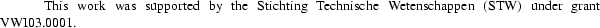
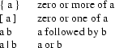

ABSTRACT
H.E. Bal
Vrije Universiteit
Wiskundig Seminarium, Amsterdam
The Target Optimizer is one of several optimizers that are part of the Amsterdam Compiler Kit. It operates directly on assembly code, rather than on a higher level intermediate code, as the Peephole Optimizer and Global Optimizer do. Consequently, the Target Optimizer can do optimizations that are highly machine-dependent.
Each target machine has its own Target Optimizer. New optimizers are generated by the Target Optimizer Generator, which uses a machine-dependent table as input. This document contains full information on how to write such a table for a new machine. It also discusses the implementation of the Target Optimizer and its generator.

This document describes the target optimizer component of the Amsterdam Compiler Kit (ACK) .[Tane81a, Tane83a, Tane83b] Optimization takes place in several parts of ACK compilers, most notably in the Peephole Optimizer[Tane82a] and the Global Optimizer,[Bal85b, Bal85a] which are both language- and machine-independent, and in the machine-specific code generators.[Tane84a] The target optimizer is the finishing touch in this sequence of optimizers. It can be used to capture those optimizations that are hard to express in the other parts of ACK. These optimizations will typically be very machine-specific.
The target optimizer operates on the assembly code of some target machine. Hence there is one target optimizer per machine. However, just as for the ACK code generators and assemblers, a framework has been build that allows easy generation of target optimizers out of machine-independent parts and a machine-dependent description table (see figure 1.). So the major part of the code of a target optimizer is shared among all target optimizers.
|-------------------------|
| machine-independent |
| code |
| |
|-----------------| |-------------------------|
descrip- |target optimizer | | machine-dependent code |
tion --> |generator | ----> | + tables |
table | | | |
|-----------------| |-------------------------|
target optimizer
Figure 1: Generation of a target optimizer.
This document focusses on the description of the machine-dependent table. In chapter 2 we give an informal introduction to the optimization algorithm and to the definition of the table format. Chapters 3 and 4 discuss the implementation of the target optimizer and the target optimizer generator. Appendix A gives full information for writing a description table.
The target optimizer is based on the well understood model of a peephole optimizer.[Aho78a] It contains a machine-dependent table of (pattern,replacement) pairs. Each pattern describes a sequence of one or more assembler instructions that can be replaced by zero or more equivalent, yet cheaper, instructions (the ’replacement’). The optimizer maintains a window that moves over the input. At any moment, the window contains some contiguous part of the input. If the instructions in the current window match some pattern in the table, they are replaced by the corresponding replacement; else, the window moves one instruction to the right.
In the remainder of this section we will give an informal description of the machine-dependent table. A more precise definition is given in appendix A. We will first discuss the restrictions put on the format of the assembly code.
We assume that a line of assembly code begins with an instruction mnemonic (opcode), followed by zero or more operands. The mnemonic and the first operand must be separated by a special character (e.g. a space or a tab). Likewise, the operands must be separated by a special character (e.g. a comma). These separators need not be the same for all machines.
The major part of the table consists of (pattern,replacement) pairs called entries.
A pattern is a list of instruction descriptions. Each instruction description describes the instruction mnemonic and the operands.
A mnemonic is described either by a string constant or by the keyword ANY. As all entities dealt with by the target optimizer are strings, string constants do not contain quotes. A string constant matches only itself. ANY matches every instruction mnemonic.
Examples of mnemonic descriptions:
add
sub.l
mulw3
ANY
An operand can also be described by a string constant.
Examples:
(sp)+
r5
-4(r6)
Alternatively, it can be described by means of a variable name. Variables have values which are strings. They have to be declared in the table before the patterns. Each such declaration defines the name of a variable and a restriction to which its value is subjected.
Example of variable declarations:
CONST { VAL[0] == ’$’ };
REG { VAL[0] == ’r’ && VAL[1] >= ’0’ && VAL[1] <= ’3’ &&
VAL[2] == ’\0’ };
X { TRUE };
The keyword VAL denotes the value of the variable, which is a null-terminated string. An operand description given via a variable name matches an actual operand if the actual operand obeys the associated restriction.
CONST matches $1, $-5, $foo etc.
REG matches r0, r1, r2 and r3
X matches anything
The restriction (between curly braces) may be any legal "C"[Kern78a] expression. It may also contain calls to user-defined procedures. These procedures must be added to the table after the patterns.
Example:
FERMAT_NUMBER { VAL[0] == ’$’ && is_fermat_number(&VAL[1]) };
An operand can also be described by a mixture of a string constant and a variable name. The most general form allowed is:
string_constant1 variable_name string_constant2
Example:
(REG)+ matches (r0)+, (r1)+, (r2)+ and (r3)+
Any of the three components may be omitted, so the first two forms are just special cases of the general form. The name of a variable can not be used as a string constant. In the above context, it is impossible to define an operand that matches the string "REG". This limitation is of little consequence, as the table writer is free to choose the names of variables. This approach, however, avoids the need for awkward escape sequences.
A pattern consists of one or more instruction descriptions (separated by a colon) followed by an optional constraint. A pattern "P1 : P2 : .. : Pn C" matches the sequence of instructions "I1 I2 .. In" if:
|
(i) |
for each i, 1 <= i <= n, Pi matches Ii, as described above; |
|
(ii) |
multiple occurrences of the same variable name or of the keyword ANY stand for the same values throughout the pattern; |
|
(iii) |
the optional constraint C is satisfied, i.e. it evaluates to TRUE. |
The pattern:
dec REG : move.b CONST,(REG)
matches:
dec r0 : move.b $4,(r0)
but not:
dec r0 : move.b $4,(r1)
(as the variable REG matches two different strings).
If a pattern containing different registers must be described, extra names for a register should be declared, all sharing the same restriction.
Example:
REG1,REG2 { VAL[0] == ’r’ && ..... };
addl3 REG1,REG1,REG2 : subl2 REG2,REG1
The optional constraint is an auxiliary "C" expression (just like the parameter restrictions). The expression may refer to the variables and to ANY.
Example:
move REG1,REG2 { REG1[1] == REG2[1] + 1 }
matches
move r1,r0
move r2,r1
move r3,r2
The replacement part of a (pattern,replacement) table entry has the same structure as a pattern, except that:
|
(i) |
it may not contain an additional constraint; |
|
(ii) |
it may be empty. |
A replacement may also refer to the values of variables and ANY.
This section contains some realistic examples for optimization on PDP-11 and Vax assembly code.
Suppose the table contains the following declarations:
X, LOG { TRUE };
LAB { VAL[0] == ’L’ }; /* e.g. L0017 */
A { no_side_effects(VAL) };
NUM { is_number(VAL) };
The procedure "no_side_effects" checks if its argument contains any side effects, i.e. auto increment or auto decrement. The procedure "is_number" checks if its argument contains only digits. These procedures must be supplied by the table-writer and must be included in the table.
entry: addl3 X,A,A -> addl2 X,A;
This entry changes a 3-operand instruction into a cheaper 2-operand instruction. An optimization like:
addl3 r0,(r2)+,(r2)+ -> addl2 r0,(r2)+
is illegal, as r2 should be incremented twice. Hence the second argument is required to be side-effect free.
entry: addw2 $-NUM,X -> subw2 $NUM,X;
An instruction like "subw2 $5,r0" is cheaper than "addw2 $-5,r0", because constants in the range 0 to 63 are represented very efficiently on the Vax.
entry: bitw $NUM,A : jneq LAB
{ is_poweroftwo(NUM,LOG) } -> jbs $LOG,A,LAB;
A "bitw x,y" sets the condition codes to the bitwise "and" of x and y. A "jbs n,x,l" branches to l if bit n of x is set. So, for example, the following transformation is possible:
bitw $32,r0 : jneq L0017 -> jbs $5,r0,L0017
The user-defined procedure "is_poweroftwo" checks if its first argument is a power of 2 and, if so, sets its second argument to the logarithm of the first argument. (Both arguments are strings). Note that the variable LOG is not used in the pattern itself. It is assigned a (string) value by "is_poweroftwo" and is used in the replacement.
Suppose we have the following declarations:
X { TRUE };
A { no_side_effects(VAL) };
L1, L2 { VAL[0] == ’I’ };
REG { VAL[0] == ’r’ && VAL[1] >= ’0’ && VAL[1] <= ’5’ &&
VAL[2] == ’\0’ };
The implementation of "no_side_effects" may of course differ for the PDP-11 and the Vax.
entry: mov REG,A : ANY A,X -> mov REG,A : ANY REG,X ;
This entry implements register subsumption. If A and REG hold the same value (which is true after "mov REG,A") and A is used as source (first) operand, it is cheaper to use REG instead.
entry: jeq L1 : jbr L2 : labdef L1 -> jne L2 : labdef L1;
The "jeq L1" is a "skip over an unconditional jump". "labdef L1" denotes the definition (i.e. defining occurrence) of label L1. As the target optimizer has to know how such a definition looks like, this must be expressed in the table (see Appendix A).
entry: add $01,X { carry_dead(REST) } -> inc X;
On the PDP-11, an add-one is not equivalent to an increment. The latter does not set the carry-bit of the condition codes, while the former does. So a look-ahead is needed to see if the rest of the input uses the carry-bit before changing the condition codes. A look-ahead of one instruction is provided by the target optimizer. This will normally be sufficient for compiler-generated code. The keyword REST contains the mnemonic of the first instruction of the rest of the input. If this instruction uses the carry-bit (e.g. an adc, subc, bhis) the transformation is not allowed.
The target optimizer reads one input file of assembler instructions, processes it, and writes the optimized code to the output file. So it performs one pass over the input.
The optimizer uses a window that moves over the input. It repeatedly tries to match the instructions in the window with the patterns in the table. If no match is possible, the window moves one instruction forwards (to the right). After a successful match the matched instructions are removed from the window and are replaced by the replacement part of the table entry. Furthermore, the window is moved a few instructions backwards, as it is possible that instructions that were rejected earlier now do match. For example, consider the following patterns:
cmp $0, X -> tst X ;
mov REG,X : tst X -> move REG.X ; /* redundant test */
If the input is:
mov r0,foo : cmp $0,foo
then the first instruction is initially rejected. However, after the transformation
cmp $0,foo -> tst foo
the following optimization is possible:
mov r0,foo : tst foo -> mov r0,foo
The window is implemented as a queue. Matching takes place at the head of the queue. New instructions are added at the tail. If the window is moved forwards, the instruction at the head is not yet written to the output, as it may be needed later on. Instead it is added to a second queue, the backup queue. After a successful match, the entire backup queue is inserted at the front of the window queue, which effectively implements the shift backwards.
Both queues have the length of the longest pattern in the table. If, as a result of a forward window move, the backup queue gets full, the instruction at its head is outputted and removed. Instructions are read from the input whenever the window queue contains fewer elements than the length of the longest pattern.
Pattern matching is done in three steps:
|
(i) |
find patterns in the table whose instruction mnemonics match the mnemonics of the instructions in the current window; |
|
(ii) |
check if the operands of the pattern match the operands of the instructions in the current window; |
|
(iii) |
check if the optional constraint is satisfied. |
For step (i) hashing is used. The mnemonic of the first instruction of the window is used to determine a list of possible patterns. Patterns starting with ANY are always tried.
Matching of operand descriptions against actual operands takes place as follows. The general form of an operand description is:
string_constant1 variable_name string_constant2
The actual operand should begin with string_constant1 and end on string_constant2. If so, these strings are stripped from it and the remaining string is matched against the variable. Matching a string against a variable is defined as follows:
|
1. |
initially (before the entire pattern match) all variables are uninstantiated; |
|
2. |
matching a string against an uninstantiated variable succeeds if the restriction associated with the variable is satisfied. As a side effect, it causes the variable to be instantiated to the string; |
|
3. |
matching a string against an instantiated variable succeeds only if the variable was instantiated to the same string. |
Matching an actual mnemonic against the keyword ANY is defined likewise.
The matching scheme implements the requirement that multiple occurrences of the same variable name or of the keyword ANY should stand for the same values throughout the entire pattern (see section 2.).
Both the parameter restriction of 2. and the constraint of step (iii) are checked by executing the "C" expression.
The most important data structure is the representation of the input instructions. For every instruction we use two representations:
|
(i) |
the textual representation, i.e. the exact code as it appeared in the input; |
|
(ii) |
a structural representation, containing the opcode and the operands. |
The opcode of an instruction is determined as soon as it is read. If the line contains a label definition, the opcode is set to "labdef", so a label definition is treated like a normal instruction.
The operands of an instruction are not determined until they are needed, i.e. until step (i) of the pattern matching process has succeeded. For every instruction we keep track of a state. After the opcode has successfully been determined, the state is OPC_ONLY. Once the operands have been recognized, the state is set to DONE. If the opcode or operands can not be determined, or if the instruction cannot be optimized for any other reason (see Appendix A), the state is set to JUNK and any attempt to match it will fail.
For each table entry we record the following information:
|
(i) |
the length of the pattern (i.e. the number of instruction descriptions) |
|
(ii) |
a description of the instructions of the pattern |
|
(iii) |
the length of the replacement |
|
(iv) |
a description of the instructions of the replacement. |
The description of an instruction consists of:
|
(i) |
the opcode |
|
(ii) |
for each operand, a description of the operand. |
The description of an operand of the form:
string_constant1 variable_name string_constant2
contains:
|
(i) |
both string constants |
|
(ii) |
the number of the variable. |
Each declared variable is assigned a unique number. For every variable we maintain:
|
(i) |
its state (instantiated or not instantiated) |
|
(ii) |
its current value (a string). |
The restrictions on variables and the constraints are stored in a switch-statement, indexed by variable number and entry number respectively.
The target optimizer generator (topgen) reads a target machine description table and produces two files:
|
gen.h: |
contains macro definitions for machine parameters that were changed in the parameter section of the table (see appendix A) and for some attributes derived from the table (longest pattern, number of patterns, number of variables). |
|
gen.c: |
contains the entry description tables, code for checking the parameter restrictions and constraints (switch statements) and the user-defined procedures. |
These two files are compiled together with some machine-independent files to produce a target optimizer.
Topgen is implemented using the LL(1) parser generator system LLgen ,[Jaco85a] a powerful tool of the Amsterdam Compiler Kit. This system provides a flexible way of describing the syntax of the tables. The syntactical description of the table format included in Appendix A was derived from the LLgen syntax rules.
The parser uses a simple, hand-written, lexical analyzer (scanner). The scanner returns a single character in most cases. The recognition of identifiers is left to the parser, as this eases the analysis of operand descriptions. Comments are removed from the input by the scanner, but white space is passed to the parser, as it is meaningful in some contexts (it separates the opcode description from the description of the first operand).
Topgen maintains two symbol tables, one for variable names and one for tunable parameters. The symbol tables are organized as binary trees.
Aho78a.
|
A.V. Aho and J.D. Ullman, Principles of compiler design, Addison-Wesley, Reading, Massachusetts (1978). |
Bal85a.
|
H.E. Bal, “The Design and Implementation of the EM Global Optimizer,” Rapport IR-99, Vrije Universiteit, Amsterdam (March 1985). |
Bal85b.
|
H.E. Bal and A.S. Tanenbaum, “Language- and Machine-independant Global Optimization on Intermediate Code,” Rapport IR-98, Vrije Universiteit, Amsterdam (March 1985). |
Jaco85a.
|
C.J.H. Jacobs, “Some Topics in Parser Generation,” Rapport IR-105, Vrije Universiteit, Amsterdam (October 1985). |
Kern78a.
|
B.W. Kernighan and D.M. Ritchie, The C Programming Language, Prentice-Hall, Inc, Englewood Cliffs,NJ (1978). |
Tane84a.
|
A.S. Tanenbaum, E.G. Keizer, J.M. van Staveren, and J.W. Stevenson, “Amsterdam Compiler Kit documentation,” Rapport nr IR-90, Vrije Universiteit, Amsterdam (June 1984). |
Tane81a.
|
A.S. Tanenbaum, J.M. van Staveren, E.G. Keizer, and J.W. Stevenson, “A Practical Toolkit for Making Portable Compilers,” Rapport nr IR-74, Vrije Universiteit, Amsterdam (October 1981). |
Tane83a.
|
A.S. Tanenbaum, J.M. van Staveren, E.G. Keizer, and J.W. Stevenson, “A Practical Toolkit for Making Portable Compilers,” CACM, 26, 9, pp. 654-660 (September 1983). |
Tane83b.
|
A.S. Tanenbaum, J.M. van Staveren, E.G. Keizer, and J.W. Stevenson, “A Unix Toolkit for Making Portable Compilers,” Proceedings USENIX conf., 26, pp. 255-261, Toronto, Canada (July 1983). |
Tane82a.
|
A.S. Tanenbaum, J.M. van Staveren, and J.W. Stevenson, “Using Peephole Optimization on Intermediate Code,” TOPLAS, 4, 1, pp. 21-36 (January 1982). |
In this appendix we present a complete definition of the target optimizer description table format. This appendix is intended for table-writers. We use syntax rules for the description of the table format. The following notation is used:

Terminals are given in quotes, as in ’;’.
The table may contain white space and comment at all reasonable places. Comments are as in "C", so they begin with /* and end on */. Identifiers are sequences of letters, digits and the underscore (’_’), beginning with a letter.
table -> {parameter_line} ’%%;’ {variable_declaration} ’%%;’
{entry} ’%%;’ user_routines.
A table consists of four sections, containing machine-dependent constants, variable declarations, pattern rules and user-supplied subroutines.
parameter_line -> identifier value ’;’ .
A parameter line defines some attributes of the target machines assembly code. For unspecified parameters default values apply. The names of the parameters and the corresponding defaults are shown in table 1.
table 1: parameter names and defaults
The OPC_TERMINATOR is the character that separates the instruction mnemonic from the first operand (if any). The OP_SEPARATOR separates adjacent operands. A LABEL_STARTER is the first character of an instruction label. (Instruction labels are assumed to start with the same character). The LABEL_TERMINATOR is the last character of a label definition. It is assumed that this character is not used in an applied occurrence of the label identifier. For example, the defining occurrence may be "I0017:" and the applied occurrence may be "I0017" as in "jmp I0017". MAXOP defines the maximum number of operands an instruction can have. MAXOPLEN is the maximum length (in characters) of an operand. MAX_OPC_LEN is the maximum length of an instruction opcode. MAXVARLEN is the maximum length of a declared string variable. As variables may be set by user routines (see "bitw" example for the Vax) the table-writer must have access to this length and must be able to change it. MAXLINELEN denotes the maximum length of a line of assembly code. PAREN_OPEN and PAREN_CLOSE must be used when the operand separator can also occur within operands, between parentheses of some kind. In this case, PAREN_OPEN must be set to a string containing the opening parentheses, and PAREN_CLOSE must be set to a string containing the closing parentheses.
If a line of assembly code violates any of the assumptions or exceeds some limit, the line is not optimized. Optimization does, however, proceed with the rest of the input.
variable_declaration -> identifier {’,’ identifier} restriction ’;’ .
restriction -> ’{’ anything ’}’ .
A variable declaration declares one or more string variables that may be used in the patterns and in the replacements. If a variable is used as part of an operand description in a pattern, the entire pattern can only match if the restriction evaluates to TRUE. If the pattern does match, the variable is assigned the matching part of the actual operand. Variables that are not used in a pattern are initialized to null-strings and may be assigned a value in the constraint-part of the pattern.
The restriction must be a legal "C" expression. It may not contain a closing bracket (’}’). Inside the expression, the name VAL stands for the part of the actual (matching) operand. The expression may contain calls to procedures that are defined in the user-routines section.
entry -> pattern ’->’ replacement ’;’ .
pattern -> instruction_descr
{ ’:’ instruction_descr }
constraint .
replacement -> [ instruction_descr { ’:’ instruction_descr } ] .
instruction_descr -> opcode
white
[ operand_descr { ’,’ operand_descr } ] .
constraint -> ’{’ anything ’}’ .
operand_descr -> [ string_constant ]
[ variable_name ]
[ string_constant ] .
variable_name -> identifier .
opcode -> anything .
The symbol ’white’ stands for white space (space or tab). An opcode can be any string not containing the special symbols ’;’, ’{’, ’}’, ’:’, ’,’, ’->’ or white space. To be recognized, it must begin with a letter. The opcode should either be a mnemonic of a target machine instruction or it should be one of the keywords ANY and labdef. ANY matches any actual opcode. labdef matches only label definitions.
If an operand description contains an identifier (as defined earlier), it is checked if the identifier is the name of a declared variable. This effects the semantics of the matching rules for the operand, as described in section 2. An operand may contain at most one such variable name.
The constraint must be a legal "C" expression, just as the operand restriction. It may call user-defined procedures and use or change the value of declared variables. It may also use the string variable REST, which contains the mnemonic of the first instruction of the rest of the input. (REST is a null-string if this mnemonic can not be determined).
user_routines -> anything .
The remainder of the table consists of user-defined subroutines.